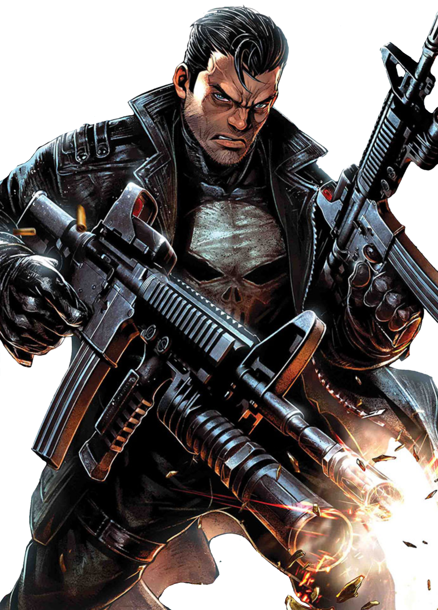

Punisher

BIO
a former United States Marine-turned-violent vigilante. While serving in Afghanistan alongside with Billy Russo, where the duo became close friends, Castle and Russo joined the black-ops team, Cerberus Squad under the command of CIA Officer William Rawlins aimed at capturing, interrogating, and executing high-value targets. Fearing he was slowly losing his honor, Castle returned to his family, only to lose them all during a brutal shooting. Castle became the Punisher, as he aimed to clean up New York City of all crime by any means necessary. While seeking to avenge his own family's deaths, Castle also came in conflict with Daredevil. Castle was soon arrested and, despite the efforts of Nelson and Murdock, was sentenced to life in prison. However, Castle was freed with the help of Wilson Fisk and discovered the Blacksmith was in fact the one who had been responsible for his family's murder, or at least one of them
Full Name | Francis Castle
Origin/Birthplace | Queens, New York City
Allegiance | Anti-Hero
Race | Human
POWER STATS
Intelligence | 75%
Strength | 90%
Speed | 80%
Durability | 90%
Power | 80%
Combat Exp | 90%